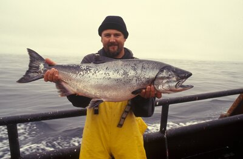
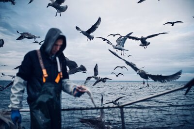

Target Audience
The primary audience for this website is local fishermen and fish and shrimp farmers. The website aims to help market the products locally and export them as well as help with branding, marketing, networking, financial assistance and security.
Personas
First persona
Name: Valentino
Title: Fisherman
Age: 35 years
Status: Married
Education: Highschool diploma
Expectations:
This page will be useful to make my products known to other markets, and increase my income.
Second persona
Name: Alexander
Title: Fisherman
Age: 40 years
Status: Divorced with three children
Education: Elementary school
Expectations:
I am happy to start using this site, as it will help me to make my products visible to others, which
will allow me to increase my sales and improve my quality of life.
Scenarios
- Can I make contacts in order to distribute my product?
- Will I get help to export my product out of the country?
- Will I receive business consulting?
- How will i receive payments